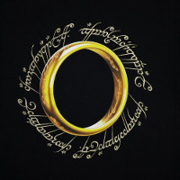

The Lord of the Rings is de titel, gebruikt voor de verfilmingen van het gelijknamige boek van J.R.R. Tolkien.
De verfilming, geregisseerd door Peter Jackson, is een trilogie:
Deze films trokken ieder jaar rond de kerst volle zalen. Het derde deel won in 2004 het recordaantal van elf Oscars. De eerste twee delen wonnen respectievelijk vier en twee Oscars.
Iedere regisseur zei dat het onmogelijk was om dit epische verhaal te verfilmen. Peter Jackson bleef echter doorbijten en kwam bij een eerste filmmaatschappij die een budget gaf om de boeken te verfilmen. Deze wilde echter maar 2 films maken in plaats van 3. Peter Jackson schreef zijn scenario maar tijdens een vergadering met de toenmalige studio Miramax, gaf de CEO van deze echter aan maar 1 film te willen financieren. Jackson weigerde om maar 1 film te maken omdat hij vond dat hij het verhaal niet in 1 film kon vertellen. Daarom ging Jackson haastig op zoek naar een nieuwe studio. Uiteindelijk kwam hij bij New Line Cinema terecht en die gaf hem een budget om 3 films te maken. Hierdoor moest hij het script weer herschrijven.
